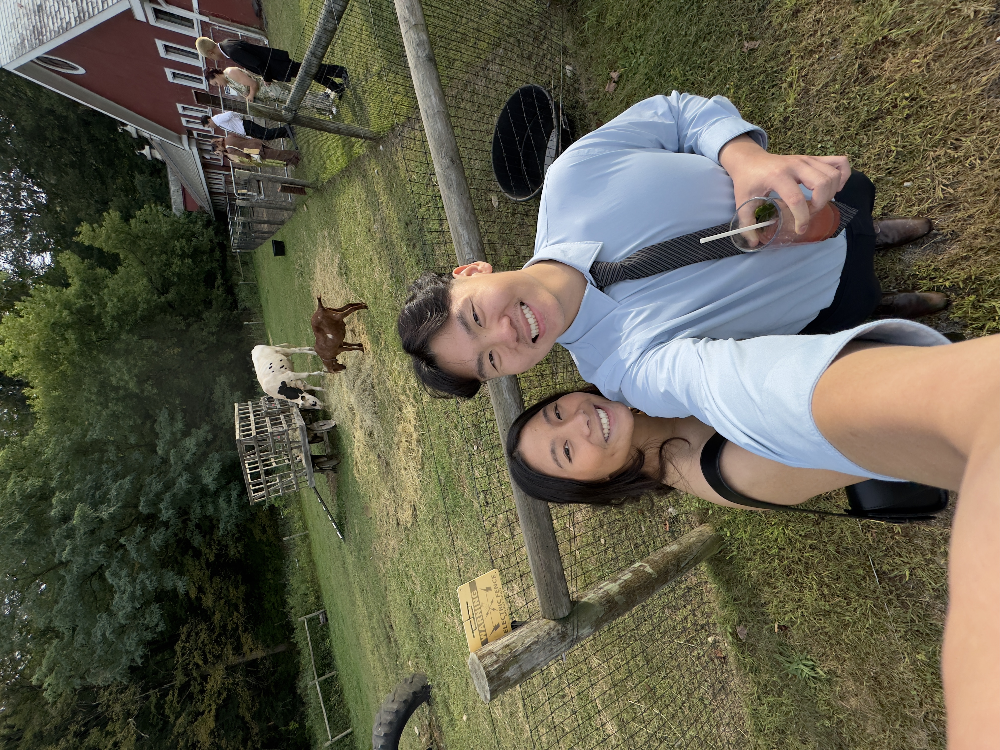

Welcome to My Homepage!
Hi, I'm Brandan Yong! As a graduate student in computer science with a background in nursing, I have a unique combination of skills and knowledge that can contribute to the development and improvement of technology.
I currently am pursuing my Master of Science in Computer Science at Northeastern, where I've had the opportunity to be a Teachers Assistant for Object Oriented Programming, and Intensive Foundations of Computer Science. Currently, I am an IT Intern at The Depository Trust and Clearing Corporation.
Before pursuing my master's degree, I worked as a registered nurse at Massachusetts General Hospital and Brigham and Women's Hospital for over two years. I am passionate about utilizing technology to help others, and am looking for the opportunity to gain experience in the technology field.